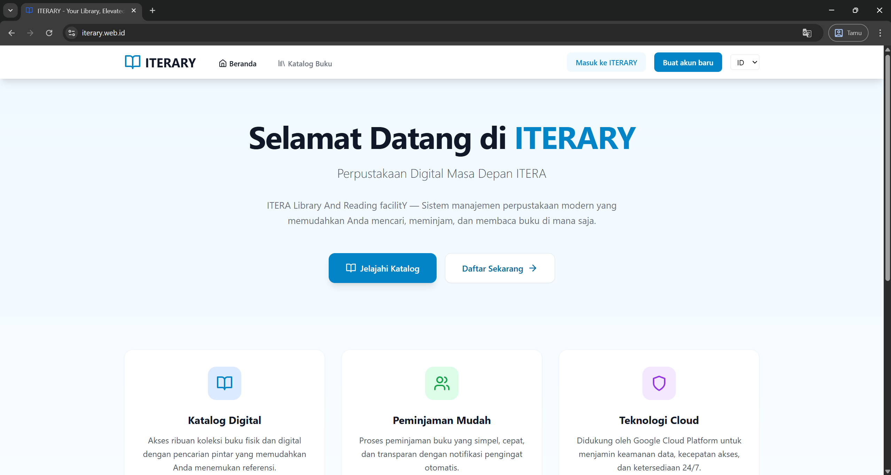

Background
ITERARY is a digital library management system built for the Institut Teknologi Sumatera community. The project applies cloud computing to a library service.

Cloud computing project
A cloud-based digital library management system for Institut Teknologi Sumatera (ITERA), developed as a cloud computing project.
ITERARY is a digital library management system built for the Institut Teknologi Sumatera community. The project applies cloud computing to a library service.
Create a cloud-based digital library management system for ITERA. The project combines a library-service use case with the technologies listed for its implementation.
Google Cloud Platform, Progressive Web App (PWA), Redis, and Docker are listed in the project portfolio. Their specific responsibilities and configuration can be detailed here.
This page provides a starting point for the full project description. The system features, architecture, deployment process, and individual contributions can be expanded here with project-specific details.
The project is categorized as cloud computing and describes ITERARY as a cloud-based digital library management system. Add the architecture, deployment setup, technical decisions, and challenges here to document the complete implementation.